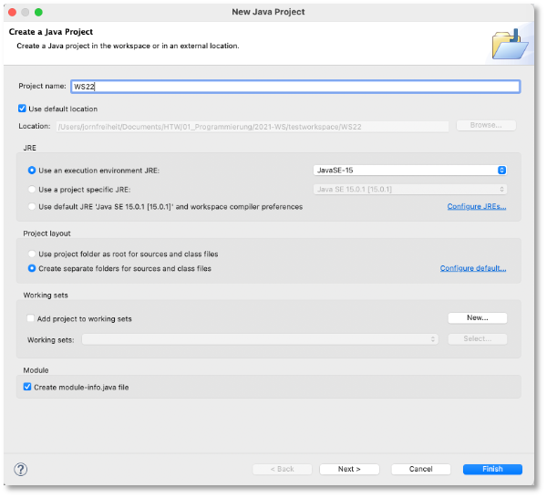
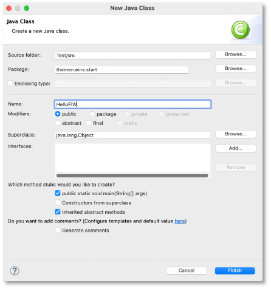
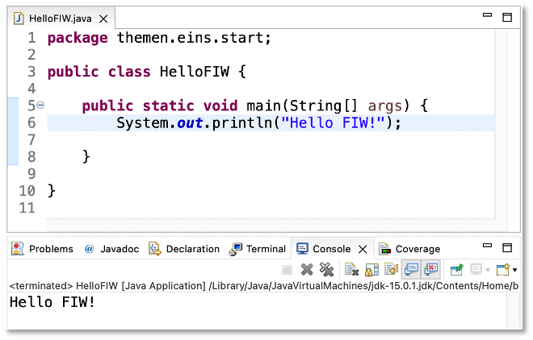
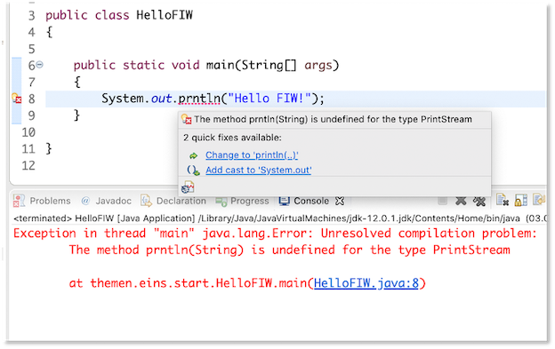

Unser erstes Programm¶
Bevor wir uns mit der Funktionsweise von Java auseinandersetzen, schreiben wir einfach einmal unser erstes Programm. Wir öffnen dazu Eclipse und erstellen uns eine Klasse HelloFIW. Dazu
-
erstellen wir uns ein Java-Projekt (falls noch nicht geschehen): Menüpunkt
File --> New --> Java Project, geben in das TextfeldProject name:z.B.WS24(in den Screenshots steht dortWS22) ein.
Den
module namebeim Erstellen dermodule-info.javakönnen Sie genau so lassen, wie vorgeschlagen (WS24). Klicken Sie auf den ButtonCreate. -
erstellen wir uns ein Paket: Menüpunkt
File --> New --> Packageund gebenthemen.eins.startein. - erstellen wir uns eine Klasse: Wir wählen das Paket
themen.eins.startaus und wählen den MenüpunktFile --> New --> Class, geben in dem Fenster den KlassennamenHelloFIWein und setzen beipublic static void main(Strg[] args)ein Häkchen:

Im Editor-Fenster von Eclipse erscheint:
Schauen wir uns diesen Code zunächst an:
- in Zeile
1sehen wir, in welchem Paket sich unsere Klasse befindet. Die Anweisungpackage themen.eins.start;definiert, dass wir uns im Paketthemen.eins.startbefinden. Mit Paketen werden wir uns in Kürze ausführlich auseinandersetzen. - in Zeile
3steht unsere Klassendefinition. Diese erkennen wir am Schlüsselwortclassgefolgt von dem Namen der KlasseHelloFIW. Das Schlüsselwortpublicbeschreibt, dass es sich um eine öffentliche Klasse handelt, die von allen genutzt werden kann. Dieses Schlüsselwort ist ein sogenannter Sichtbarkeitsmodifierer (auch Zugriffsmodifizierer). Mit Sichtbarkeitsmodifizierern werden wir uns ebenfalls noch ausführlich auseinandersetzen. Wichtig ist, dass die Klasse nicht nur aus dem Klassenkopf (public class HelloFIW) besteht, sondern aus allem, was diese Klassen enthält (dem Klassenrumpf). Der Klassenrumpf beginnt mit einer öffnenden geschweiften Klammer{(Zeile4) und endet mit einer schließenden geschweiften Klammer}(Zeile12). - eine Klasse kann beliebig viele Methoden enthalten. Unsere Klasse enthält bis jetzt eine Methode, die Methode namens
main(). Methoden erkennen wir an den runden Klammern nach dem Methodennamen. Hier ist der Namemaingefolgt von runden Klammern, in denen Parameter (auch Argumente genannt) definiert sein können (hier ein Parameter namensargsvom Typ String-Array:Strg[] args). Wie bei den Klassen auch, bestehen Methoden aus einem Methodenkopf und einem Methodenrumpf. Wie bei den Klassen auch, beginnt der Methodenrumpf mit einer öffnenden geschweiften Klammer (Zeile7) und endet mit einer schließenden geschweiften Klammer (Zeile10). Der Methodenkopf- beginnt erneut mit einem Sichtbarkeitsmodifizierer. Dieser ist hier wieder
publicund gibt an, dass diese Methode öffentlich ist und von allen ausgeführt werden kann. - Danach kommt das Schlüsselwort
static. Dieses Schlüsselwort besagt, dass es sich bei dieser Methode um eine Klassenmethode handelt. Das Gegenstück zu einer Klassenmethode ist die Objektmethode. Wir werden uns mit der Unterscheidung zwischen Klassen- und Objektmnethoden ausführlich auseinandersetzen. Wir können uns aber schon merken (wenn überhaupt), dass wir eine Klassenmethode aufrufen können ohne ein Objekt der Klasse erstellen zu müssen. - Danach kommt das Schlüsselwort
void. Dieses Schlüsslwort gibt an, dass die Methode nichts zurückgibt. An dieser Stelle steht der Rückgabetyp eine Methode - wenn die Methode etwas zurückgibt. Unsere Methode gibt nichts zurück, deshalb hiervoid. Wir werden uns mit Methodenrückgaben ausführlich beschäftigen. - Jetzt kommt der Name der Methode, hier
main. Diemain()-Methode ist eine ganz besondere Methode. Sie existiert in einem Programm genau einmal und wird aufgerufen, wenn das Programm aufgerufen wird - die sogenannte Programmmethode. Wenn wir ein Programm ausführen, wird alles das ausgeführt, was in dem Rumpf dermain()-Methode definiert ist (derzeit noch nichts). - In den runden Klammern stehen Parameter (auch Argumente genannt). In unserem Fall ist ein Parameter namens
argsdefiniert. Der Datentyp dieses Parameters istStrg[], d.h. dass der Parameter einem Array von Zeichenketten Strings entspricht. Wir kümmern uns um Parameter später ausführlich.
- beginnt erneut mit einem Sichtbarkeitsmodifizierer. Dieser ist hier wieder
- In unserer Methode gibt es derzeit nur einen einzigen Eintrag (Zeile
8). Dabei handelt es sich um einen Kommentar, genauer hier um einen Zeilenkommentar. Zeilenkommentare beginnen mit einem Doppelslash//. Hinter diesen Doppelslash können Sie schreiben, was Sie möchten - bis an das Zeilenende. Kommentare dienen Ihnen dazu, den Code verständlicher zu gestalten oder Ihnen Hinweise zu geben. Hier steht der Hinweis, dass die Methode automatisch durch Eclipse erstellt wurde und Sie noch das ToDo haben, die Methode zu befüllen. Das machen wir jetzt auch!
Wir löschen den Kommentar und fügen nun die Anweisung System.out.println("HelloFIW !"); in unseren Methodenrumpf ein. Unsere Klasse sieht nun so aus (die neuhinzugekommene Zeile ist markiert):
Jetzt wählen wir entweder im Menü Run --> Run oder klicken auf den kleinen grünen Kreis mit dem weißen Pfeil in der Mitte in der Werkzeugleiste. Sie werden gefragt, ob Sie Ihr Programm zunächst speichern wollen. Bevor Sie das bestätigen, sollten Sie ein Häkchen setzen, um zu sagen, dass Sie das gar nicht mehr gefragt werden wollen, sondern das Programm immer gespeichert werden soll, bevor Sie es ausführen. In der Konsole erscheint:

Success
Herzlichen Glückwunsch! Sie haben Ihr erstes Java-Programm geschrieben und ausgeführt!
System.out.println("Hello FIW!");¶
Schauen wir uns System.out.println("Hello FIW!"); zunächst etwas genauer an. Wir verwenden hier eine Klasse, nämlcih die Klasse System. Diese Klasse existiert bereits und wurde von den Java-Entwicklern für uns gesschrieben. Sie gehört zum Standardpaket von Java, existiert bereits seit der ersten Version von Java und befindet sich im Paket java.lang. Diese Klasse hat eine interssante Klassenvariable, die wir verwenden, nämlich out. Diese Variable stellt in unserem (Betriebs-)System die Verbindung zu unserem Standardausgabegerät bereit, in unserem Fall die Konsole. Um nun eine Ausgabe auf diese Konsole zu generieren verwenden wir die Methode println(). Wir sehen hier eine typische Notation in Java, die sogenannte Punktnotation. Mithilfe dieser Punktnotation greifen wir auf Eigenschaften von Klassen und Objekten zu. In unserem Beispiel greifen wir mit System.out auf das Standardausgabegerät zu und mit System.out.println() auf die println()-Methode des Ausgabegerätes1.
Die Methode println() erzeugt also eine Ausgabe auf unsere Konsole. Jetzt müssen wir nur noch sagen, WAS ausgegeben werden sollen. Dazu übergeben wir dieser Methode eine Zeichenkette (einen String). Eine Zeichenkette erkennt man an den doppelten Anführungsstrichen "das ist eine Zeichekette". Innerhalb dieser Anführungsstriche können Sie schreiben, was Sie möchten (außer "). Wir haben uns für "Hello FIW!"entschieden und genau diese Zeichenkette (ohne die Anführungsstriche) wird ausgegeben. Die Zeichnkette, die wir ausgeben möchten, schreiben wir in die runden Klammern der println()-Methode, also println("Hello FIW!").
Bei System.out.println("Hello FIW!"); handelt es sich um eine Anweisung. Eine Anweisung endet in Java immer mit einem Semikolon ;. Dieses dürfen wir nicht vergessen, ansonsten haben wir einen Syntaxfehler und unser Programm kann nicht compiliert und nicht ausgeführt werden.
Tipp
Wir müssen System.out.println() von nun an recht häufig schreiben. Deshalb gibt es in Eclipse dafür einen Shortcut. Schreiben Sie einfach syso und klicken dann die Control (Strg)-Taste zusammen mit der Leertaste und dann Enter. Aus dem syso macht Eclipse dann automatisch System.out.println().
Das heißt, dass jede der Ausgaben mithilfe der println()-Methode in einer neuen Zeile erfolgt. Nach jeder Ausgabe erfolgt also ein Zeilenumbruch, der Ausgabecursor wird in die nächste Zeile gesetzt. Die nächste Ausgabe beginnt am Anfang der neuen Zeile.
Wir wollen nun unser Programm ändern und verwenden nicht mehr die println()- Methode, sondern print():
Wir führen das Programm erneut aus (grüner Pfeil  ) und erhalten auf der Konsole die Ausgabe:
) und erhalten auf der Konsole die Ausgabe:
Die print()-Methode gibt also nur die Zeichenkette aus, führt aber danach keinen Zeilenumbruch durch. Der Ausgabecursor bleibt hinter dem letzten ausgegebenen Zeichen stehen. Unsere drei Zeichenketten werden in der Konsole deshalb hintereinander ausgegeben.
Übung
Was müssen Sie im Programm ändern, damit zwischen ! und H jeweils ein Leerzeichen ist, also anstelle von Hello FIW!Hello FIW!Hello FIW! besser Hello FIW! Hello FIW! Hello FIW! ausgegeben wird?
Wir ändern nun unser Programm erneut und fügen folgende Anweisungen hinzu: System.out.println(). Wir rufen also die println()-Methode auf, ohne eine Zeichenkette zu übergeben, die ausgegeben werden soll. Diese Anweisung sorgt einfach dafür, dass ein Zeilenumbruch erfolgt. Es wird also nichts ausgegeben, aber der Ausgabecursor an den Beginn der nächsten Zeile gesetzt.
Wir führen das Programm erneut aus (grüner Pfeil ) und erhalten auf der Konsole die Ausgabe:
Eine mögliche Lösung
Syntaxfehler¶
Programmieren bedeutet auch, Fehler zu machen. Wichtig ist, dass Sie die Fehlerausschriften lesen und die Fehler analysieren. Haben Sie einen Syntaxfehler, so ist ein Bereich Ihres Programmcodes rot unterstrichen und an der Seite erscheint ein rotes Kreuz. Fahren Sie mit der Maus über das rote Kreuz, um die Fehlerausschrift zu erhalten. Bei einem Syntaxfehler lässt sich das Programm nicht compilieren. Sie können es trotzdem versuchen und erhalten die Fehlerausschrift dann auf der Konsole. Das folgende Bild zeigt einen Fehler:

Es erscheint die Fehlermeldung Syntax error, insert ";" to complete BlockStatements - ein Hinweis darauf, dass ein Semikolon fehlt - nämlcih am Ende der Anweisung.
In vielen Fällen bietet Eclipse einen sogenannten Quickfix an. Meistens können Sie diesen Vorschlag einfach annehmen (durch Mausclick auf den Vorschlag). Die folgende Abbildung zeigt einen solchen Quickfix für den Fehler, dass die Methode prntln() nicht existiert (es fehlt das i).

Success
Wir haben unser erstes Java-Programm geschrieben und ausgeführt! Wir haben gelernt, wie wir mithilfe der Methoden println() und print() Zeichenketten auf die Konsole ausgeben können und wir haben uns angeschaut, wie wir Fehlerausschriften lesen. Nun schauen wir uns einmal an, was im Hintergrund passiert, wenn wir das Programm ausführen.
Kommentare¶
In Ihren Quellcode (Ihr Programm) können Sie an allen beliebigen Stellen Kommentare schreiben. Kommentare werden vom Compiler ignoriert, d.h. Sie können dort hineinschreiben, was und wie Sie möchten. Es gibt drei Arten von Kommentaren in Java:
- Zeilenkommentare: Diese beginnen mit
//und danach kommt der Kommentar bis zum Zeilenende. Die neue Zeile ist dann wieder "normaler" Quellcode - Blockkommentare: Diese beginnen mit
/*und danach kommt der Kommentar. Er kann sich über mehrere Zeilen erstrecken. Ein Blockkommentar endet mit*/. Nach diesem Ende ist sofort wieder "normaler" Quellcode. - Java-Doc-Kommentare:
javadocist ein Programm aus dem Java Development Kit (JDK). Es wird eingesetzt, um den Code zu dokumentieren. Wir werdenjavadocnoch ausführlich behandeln. Mitjavadockommentierte Klassen finden Sie hier. Java-Doc-Kommentare beginnen mit/**und enden mit*/. Java-Doc-Kommentare verhalten sich wie Blockkommentare. Sie erstrecken sich über mehrere Zeilen und nach dem*/ist, wie bei Blockkommentaren, wieder "normaler" Quellcode.
>>> Ab hier müssen Sie nicht selbst ausprobieren.
>>> Es geht darum, ein Verständnis dafür zu erzeugen, dass
>>> das Programm immer zunächst compiliert und
>>> nur wenn dies erfolgreich war, ausgeführt wird
Compilieren und Ausführen¶
Wir haben nun unser erstes einfaches Programm geschrieben - in der Programmiersprache Java. Wie wir in Werkzeuge -> Java bereits bei der Installation von Java erläutert haben, ist Java nicht nur eine Programmiersprache, sondern auch ein Programm, in dem wir Java-Programme ausführen können - die Laufzeitumgebung von Java. Wir werden zunächst erläutern, was im Hintergrund passiert, wenn wir ein selbstgeschriebenes Java-Programm ausführen.
Zum besseren Verständnis erzeugen wir uns zunächst ein Verzeichnis test irgendwo auf unserem Rechner:
Dieses Verzeichnis werden wir später wieder löschen. Nun erzeugen wir uns mithilfe von vioder vim eine Datei Test.java:
Die Datei öffnet sich zum Schreiben und nach Eingabe von i können wir in diese Datei Text einfügen. Wir fügen folgendes Programm ein (Kopieren Sie das Programm und fügen es mit Strg+V in die Datei Test.java ein:
Beenden Sie den Einfügemodus von vim durch Drücken der Taste Esc und speichern die Datei und beenden vim unter Eingabe von ZZ. In unserem Ordner test befindet sich nun die Datei Test.java:
zeigt den Inhalt unseres Verzeichnisses test an (z.B.):
total 8
drwxr-xr-x@ 3 jornfreiheit staff 96 3 Aug 14:17 .
drwxr-xr-x@ 39 jornfreiheit staff 1248 1 Nov 2018 ..
-rw-r--r-- 1 jornfreiheit staff 189 3 Aug 14:17 Test.java
Wir haben eine Klasse Test in der Datei erstellt, die genauso heißt, wie die Klasse, nämlich Test.java. Wir werden in Zukunft immer die Klasse in der gleichnamigen Datei speichern, die die Dateiendung .java hat - das macht Eclipse für uns automatisch.
Compilieren der Klasse¶
Ein Computer kann keine Datei ausführen, die in einer Programmiersprache geschrieben wurde, egal um welche Programmiersprache es sich handelt. Computer verstehen nur Folgen von Nullen und Einsen, also so etwas wie 1000111110101011.... In eine solche Maschinensprache muss unser Programm übersetzt werden. Das Übersetzen erfolgt durch einen Compiler2.
Der Java-Compiler heißt javac. Wir haben den Java-Compiler zusammen mit dem Java Development Kit (JDK) installiert (siehe hier). Mithilfe des Compilers übersetzen wir nun unsere Klasse:
Wenn wir uns nun erneut den Inhalt unseres Verzeichnisses ansehen
dann entdecken wir, dass eine Datei Test.class erzeugt wurde.
total 16
drwxr-xr-x@ 4 jornfreiheit staff 128 7 Aug 11:02 .
drwxr-xr-x@ 39 jornfreiheit staff 1248 1 Nov 2018 ..
-rw-r--r-- 1 jornfreiheit staff 1001 7 Aug 11:02 Test.class
-rw-r--r-- 1 jornfreiheit staff 189 3 Aug 14:17 Test.java
Unser Java-Compiler hat unser Programm, das in Test.java enthalten ist, in sogenannten Bytecode übersetzt. Das ist ein Zwischenschritt, den es in Java gibt. Das Programm wird nicht direkt in Maschinencode übersetzt, sondern in Bytecode.
Ausführen des Programms¶
Dieser Bytecode kann nun von der Java-Laufzeitumgebung (Java Runtime Environment - JRE) ausgeführt werden. Diese Laufzeitumgebung ist selbst ein Programm, eine sogenannte Virtuelle Maschine3.
Die Ausführung unseres Programms erfolgt mithilfe der Java-Laufzeitumgebung java:
Beachten Sie, dass Sie nicht die Dateiendung .class für Ihr Programm angeben (müssen/dürfen). Auf unserer Konsole erscheint die Ausgabe
Diese Ausgabe erfolgt durch die Anweisung System.out.print("Hello "); (in Zeile 6), gefolgt von der Anweisung System.out.println("!"); (in Zeile 11). In den Zeilen 7-10 stehen Anweisungen, die wir noch nicht verstehen. Das macht nichts, wir kommen später darauf zurück. Es ist jedoch so, dass wir dadurch unserem Programm Argumente übergeben können. Betrac hten wir zum Beispiel die Anweisung ls -la. ls wäre z.B. ein "Programm" und -la ein Argument (-l sorgt dafür, dass ein langes Listenformat erscheint, also alle Angaben zu den Dateien und Ordnern erscheinen und -a sorgt dafür, dass auch die Dateien und Ordner angezeigt werden, die mit . beginnen). Versuchen wir also einmal, umserem Programm Test ein Argument zu übergeben (ohne -):
Es erscheint die Ausgabe:
Wir können sogar mehrere Argumente übergeben:
Es erscheint die Ausgabe:
Es erscheint zunächst aufwendig, das Programm zunächst in Bytecode zu übersetzen und dann den Bytecode nochmal interpretieren und ausführen zu lassen. Warum wird nicht direkt in Maschinencode übersetzt? Die Antwort ist, dass der Java-Compiler so beriebssystemunabhängig arbeiten kann. Alle, egal, ob Windows-, iOS- oder Linux-Nutzerinnen können den gleichen Compiler verwenden. Die Programme können völlig systemunabhängig geschrieben und von allen compiliert werden. Erst die Java-Laufzeitumgebung ist beriebssystemabhängig, d.h. diese wird entsprechend dem Betriebssystem installiert. Alle Java-Programme und auch ihre Compilierung sind jedoch völlig losgelöst vom verwendeten Betriebssystem und können deshalb überall ausgeführt werden.
Success
Wir haben uns angeschaut, was passiert, wenn wir das Programm übersetzen und ausführen. Die Übersetzung erfolgt durch den Java-Compiler javac. Dieser erzeugt Java-Bytecode. Die Ausführung dieses Bytcodes übernimmt die Java-Laufzeitumgebung java. Diese interpretiert den Bytecode und führt ihn sequentiell (also nacheinander, Anweisung für Anweisung) aus.
-
Wenn wir ganz genau sein wollen, dann ist
outvom TypPrintStreamund wir greifen auf die Objektmethodeprintln()desPrintStream-Objektesoutzu. ↩ -
Man unterscheidet bei Programmiersprachen, ob die Programme durch einen Compiler oder durch einen Interpreter übersetzt werden. Programmiersprachen, bei denen die Programme durch einen Interpreter übersetzt werden, werden auch Skriptsprachen genannt. In Skriptsprachen wird jede einzelne Anweisung nach und nach interpretiert, d.h. übersetzt, dann ausgeführt, dann die nächste Anweisung übersetzt, ausgeführt usw. Java-Programme werden compiliert, d.h. sie werden als Ganzes übersetzt und erst dann ausgeführt. ↩
-
Genauer handelt es sich dabei um einen Interpreter. Der Java-Bytecode wird Anweisung für Anweisung interpretiert und ausgeführt. ↩